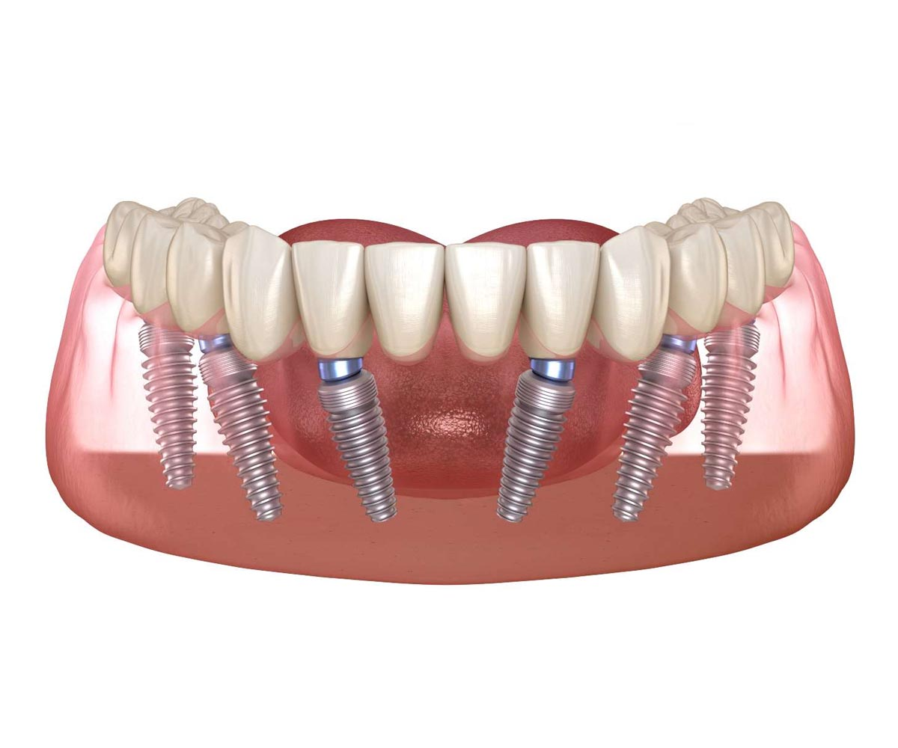

Implanturi dentare All-on-6: Optimizarea restaurării complete a arcadei
Procedura de implant dentar All-on-6 extinde conceptul de restaurare completă a arcadei. Folosind șase implanturi pentru a asigura o proteză cu arc complet, asigură o fundație și mai rezistentă, și mai stabilă pentru dinții protetici.
La bază este plasat chirurgical un bolt de titan în osul maxilarului, pentru a servi drept rădăcină artificială a dintelui. Implantul se leaga de osul natural, formand o fundatie puternica pentru sustinerea coroanei sau a dintelui artificial.
Ce reprezintă implanturile dentare all on 6?
Procedura dentară All on 6 este o soluție inovativă pentru acei pacienți care doresc un set complet de dinți. Nu pentru a le înlocui unul câte unul, ci cu șase implanturi care să susțină întreaga arcadă a dinților, acest tratament folosește implanturi de titan ancorate în osul maxilarului. Apoi atașăm o punte dentară personalizată pe implanturi pentru a vă oferi un zâmbet cu aspect complet natural.
Implanturi dentare All-on-6 Antalya
Această tehnică este ideală pentru pacienții care au pierdut mulți dinți, fie au nevoie de înlocuire din cauza cariilor sau a deteriorării. Este o alternativă rezistentă și sigură pentru protezele dentare amovibile care permit să mănânci, să vorbești și să zâmbești cu încredere. Metoda All on six ajută la menținerea sănătății maxilarului și a structurii faciale; este deci cea mai eficientă tehnică de restaurare dentară.
Implanturi dentare All-on-6 înainte și după: fotografii din Turcia
Analiza cazului 1:

Provocare: Degradare structurală generalizată, mai mulți dinți lipsă și o pierdere severă a volumului osos vertical, care conferea un profil îmbătrânit.
Soluție: Restaurare completă a întregii guri, cu plasarea strategică a implanturilor, o ocluzie proiectată meticulos și susținere anatomică a buzelor.
Rezultat: Întinerire facială imediată și spectaculoasă, simetria profilului refăcută și un zâmbet complet, tânăr și radiant.
Obiectivul nostru principal în cazul acestei paciente a fost o reconstrucție completă a întregii guri, pentru a trata degradarea structurală severă și pierderea dinților.
Detaliu-cheie: dincolo de estetică, fiecare dinte restaurat a fost proiectat individual pentru dimensiunea verticală și alinierea corectă a mușcăturii, refăcând o structură facială tânără și un profil corect.
Rezultat: această transformare completă a zâmbetului nu doar a redat funcția și sănătatea optime, ci a adus și o întinerire spectaculoasă a feței, oferindu-i pacientei un zâmbet simetric și radiant, care i-a transformat înfățișarea.
Analiza cazului 2:

Provocare: Pierdere extremă a dinților, degradare structurală generalizată și un colaps sever al dimensiunii verticale, care a dus la un profil facial înfundat.
Soluție: Reconstrucție orală completă cu coroane proiectate meticulos, pentru a reface ocluzia corectă, alinierea mușcăturii și înălțimea verticală esențială.
Rezultat: O întinerire imediată a structurii faciale, o susținere anatomică optimă a buzelor și un zâmbet simetric, plin de încredere.
Acest pacient s-a prezentat cu o degradare structurală extinsă, pierderi dentare răspândite și o dimensiune verticală redusă. Această stare conferise profilului facial un aspect „îmbătrânit” și „înfundat”.
Planul de tratament a inclus extracții dentare, tratament parodontal și reconstrucția dimensiunii verticale. Acest lucru a fost realizat prin ajustarea la milimetru a înălțimii verticale și a unghiului fiecărei restaurări.
Detaliu-cheie: nu doar culoarea dinților, ci și formele lor anatomice, înclinațiile și, mai ales, dimensiunile verticale au fost calculate cu meticulozitate pentru a reface susținerea buzelor și înălțimea feței. Acest lucru a îmbunătățit mușcătura pacientului și tonusul mușchilor faciali.
Rezultat: restaurările nu au înlocuit doar dinții, ci au refăcut și armonia generală a feței. Aspectul „îmbătrânit” a lăsat locul unui profil echilibrat, simetric și plin de vitalitate.
Cât se mențin implanturile all on 6?
Implanturile dentare all on 6 sunt destul de longevive și sunt menite să reziste ani de zile. De cele mai multe ori, aceste implanturi vor rezista o perioadă lungă de timp, iar unele dintre ele rezistă până la 20 și mai mult, cu îngrijire adecvată și igienă orală. Implanturile de titan sunt bine compatibile cu osul maxilarului, asigurând un sprijin puternic și stabilitate.
Cu toate acestea, perioada de timp în care puntea dentară rămâne fixată pe implanturi variază. Cel mai adesea, deteriorarea, igiena precară, fumatul sau obiceiurile scrâșnire a dințolor necesită înlocuirea sau renovarea podului la fiecare 10 până la 15 ani.
Igiena orală adecvată, vizitele regulate la medicul dentist verificare și curățare și orice altă îngrijire specială recomandată de medicul dvs stomatolog vor contribui la creșterea longevității implanturilor dumneavoastră all on 6. Cu o îngrijire adecvată, va asigurați un zâmbet frumos și sănătos pentru mulți ani.
Cât costă implanturile dentare all on 6?
Costul a 6 implanturi dentare în Turcia variază în funcție de locația clinicii, de nivelul de calificare al chirurgului stomatolog și de materialele folosite. Dar, de obicei, costă între 3.000 și 5.000 de dolari pe maxilar. Această sumă include de obicei consultația, plasarea chirurgicală a șase implanturi, proteza temporară și proteza permanentă.
Se știe că Turcia are servicii bune de îngrijire dentară la un preț mult mai redus în comparație cu multe alte țări. În plus, clinicile din Turcia oferă pachete care acoperă cazarea și transportul, făcându-l foarte convenabil pentru pacienții din străinătate care doresc un implant all on 6.
De ce sunt implanturile dentare all on 6 atât de Ieftine în Turcia?
Din câteva motive, toate implanturile all on 6 sunt accesibile în Turcia. În primul rând, Turcia are un cost al vieții și costuri operaționale în general mai mici în comparație cu majoritatea țărilor occidentale. Acest lucru face posibil ca clinicile să ofere servicii bune și de calitate la prețuri relativ mici pentru implanturi all on 6. Deasemnea, Turcia este o piață competitivă în domeniul medical, cu mulți stomatologi bine calificați și clinici moderne care oferă servicii bune la prețuri reduse pentru implanturi all on 6 în Turcia.
Mai mult, guvernul turc încurajează activ turismul medical prin acordarea îndeminzațiilor și facilitarea procedurilor speciale pentru pacienții străini. Acest lucru mărește fluxul de pacienți către clinici, reducând și mai mult costurile pentru implanturi dentare all on 6. În plus, ratele de schimb favorabile ale valutelor străine vor face tratamentul mai rentabil pentru orice pacient.
În ciuda prețului mai mic, majoritatea clinicilor stomatologice turcești propun pacienților cea mai recentă tehnologie și materiale corespunzătoare pentru cel mai bun tratament. Optarea pentru implanturi all on 6 în Turcia poate duce la economii semnificative de costuri, fără a reduce calitatea.
Cum curățați implanturile dentare all on 6?
Pentru sănătatea bucală, igiena implanturilor dentare all on 6 este esențială. De două ori pe zi, periați cu o periuță de dinți moale și pastă de dinți non-abrazivă. Între implanturi și sub punte, utilizați o ață dentară sau periuțe interdentare. Îndepărtați placa și germenii folosind apă de gură antimicrobiană. Vizitele la dentist și curățarea sunt, de asemenea, esențiale. Medicul dentist vă poate sugera instrumente și metode de curățare în funcție de preferințele dvs. Întreținerea vă menține implanturile curate și sănătoase.

Care este diferența dintre All-on-6 și All-on-4?
Numărul de implanturi necesare pentru a susține o arcade completă de dinți distinge implanturile dentare all on 6 și all on 4. All on 6 folosește șase implanturi pentru stabilitate și sprijin, ceea ce poate ajuta oasele mai fragile. Metoda all on 4 este o procedură mai puțin intruzivă și perioada de recuperare este mai rapidă. Ambele opțiuni oferă un tratament permanent, cu aspect natural, pentru dinții lipsă, dar all on 6 este mai stabil, în special pentru persoanele cu cerințe dentare mai complexe. Pentru cea mai bună soluție, consultați medicul dentist calificat.
Care tehnică este mai bună: All-on-6 sau All-on-4?
Cerințele individuale determină optarea pentru implanturi dentare all on 4 sau all on 6. Implanturile All on 4 sunt ideale pentru multe persoane, deoarece sunt mai puțin intruzive, implică mai puține implanturi și se vindecă mai repede. Implanturile All on 6 oferă mai multă stabilitate și sprijin, în special pentru pacienții cu țesut osos mai slab sau cu cerințe dentare mai mari. Ambele opțiuni oferă un aspect simetric autentic, deși all on 6 poate fi considerat mai puternic.
Care sunt dezavantajele implanturilor All-on-6?
În ciuda beneficiilor lor, tehnica all on 6 prezintă și anumite dezavantaje. Datorită implanturilor suplimentare și tehnologiei superioare, costul inițial al implanturilor dentare all on 6 înTurcia poate fi mai mare comparativ cu protezele dentare standard sau implanturile all on 4. Deoarece tratamentul este mai intruziv, unii pacienți pot avea nevoie de grefa osoasă pentru a susține cele șase implanturi.
Intervenția chirurgicală poate produce durere, edem și implica o perioadă prelungită de recuperare. Infecțiile și eșecurile implantului pot rezulta din îngrijirea necorespunzătoare.
În cele din urmă, nu orice pacient este un candidat eligibil pentru implanturi all on 6, în special cei cu afecțiuni grave de sănătate sau cu structură osoase inadecvată. Specialistul nostru stomatologic trebuie să vă evalueze pentru a vedea dacă această opțiune este potrivită pentru dvs.
Procedura de implant dentar all on 6
Procedura de implant dentar all on 6 începe cu o consultație amănunțită, urmată de radiografii și scanări 3D, pentru a analiza densitatea și structura osoasă. Odată ce îndepliniți cerințele de eligibilitate, tratamentul poate începe.
În ziua operației, medicul dentist administrează anestezie locală sau sedative, pentru confort. Medicul dentist va expune osul maxilarului cu incizii minore pe gingie. Sase implanturi de titan introduse strategic in os asigură stabilitate. Cu dinții temporari atașați de implanturi, puteți părăsi clinica cu un aspect normal.
După 3-6 luni, implanturile se vor osteointegra cu osul maxilar. O dietă corespunzătoare și o bună igienă bucală sunt importante pentru recuperare.
După osteointegrare, reveniți la clinică pentru a vă monta puntea permanentă personalizată și fixată pe implanturi. Această aplicație finală seamănă cu dinții naturali și este puternică, confortabilă și atractivă.
Cine este eligibil pentru implantul dentar all on 6 ?
Un candidat potrivit pentru implanturile dentare all on 6 este o persoană care și-a pierdut majoritatea sau toți dinții și își dorește o alternativă permanentă. Candidații ar trebui să aibă o densitate a maxilarului suficientă, pentru a susține implanturile; cu toate acestea, grefarea osoasă este o posibilitate de recuperare osoasă. Diabetul necontrolat și bolile gingiilor pot influența succesul implantului, prin urmare, sănătate orală și generală bună sunt cruciale. Nefumătorii sau fumătorii care vor face o pauză au o rată de succes mai mare. Stomatologul nostru vă va evalua nevoile înainte de a recomanda acest tratament.
Care sunt beneficiile implantul dentar all on 6?
Implantul all on 6 prezintă mai multe beneficii. Aceste aplicații permanente de dinți vă permit să mâncați, să vorbiți și să zâmbiți cu încredere. Pacienții cu oase mai slabe beneficiază de suportul și longevitatea mai mare ale all on 6. Implanturile previn pierderea osoasă și mențin structura feței, menținând oasele maxilare sănătoase și tinere. Aspectul lor natural și întreținerea ușoară le avatajează față de protezele obișnuite. În comparație cu alte restaurări complete, necesită mai puține vizite și mai puțin timp.
Cât durează implantul dentar all on 6?
Majoritatea procedurilor de implant dentar all on 6 dureaz câteva luni. Operația de plasare a implantului durează 2-3 ore. După plasare, implanturile trebuie să se recupereze timp de 3-6 luni, pentru a fuziona cu osul maxilarului. Se vor purta proteze dentare temporare. Dupa vindecare se montează proteza definitiva. Acest proces necesită multe sesiuni de testare și ajustare.
Câți dinți obțineți cu implanturile All-on-6?
Implanturile dentare all on 6 oferă o arcada completă de 12-14 dinți. Cele șase implanturi ale maxilarului susțin acești dinți, creând un aspect plin și natural. Numărul depinde de cerințele individuale și de designul punții dentare. Cu această aplicație puteți mânca, vorbi și zâmbi cu încredere, ceea ce vă restabilește funcționarea zâmbetului și a dinților. Dinții personalizați arată și se simt ca dinții naturali, îmbunătățind estetica și utilitatea.
Sunt implanturile all on 6 detașabile?
Nu, pacienții nu pot îndepărta structura all on 6. Designul leunește permanent de șase implanturi de titan în osul maxilarului. Aceasta sustine intreaga arcadă dentară. Natura permanentă a implanturilor all on 6 vă permite să mâncați, să vorbiți și să zâmbiți fără a vă preocupa de mișcare sau alunecare. Pentru a menține performanța și confortul, numai un dentist poate îndepărta implanturile.
La ce să vă așteptați după implanturile dentare All-on-6?
În câteva zile, umflarea, durerea și sângerarea implanturilor dentare all on 6 se va reduce. Puteți administra antibiotice și analgezice pentru a controla simptomele și a preveni infecția. O dietă moale este esențială în primele luni, pentru a lăsa implanturile să se integreze cu osul maxilar. Sunt necesare examene dentare regulate pentru monitorizarea recuperării. După ce implanturile se integrează, dinții provizorii se vor înlocui cu o punte personalizată.
Voi avea durere în timpul și după aplicarea tehnicii de implant dentar all on 6?
Nu. Pentru ca procesul de implant dentar all on 6 să fie nedureros, se utilizează anestezie locală sau sedație. Este posibil să simțiți presiune, dar fără disconfort. Pentru câteva zile după operație, este posibil să aveți durere, edem și sângerare. Analgezicele prescrise sau eliberate fără prescripție medicală vă vor ajuta. Majoritatea pacienților tolerează durerea și remarcă recuperarea într-o săptămână. Urmărirea recomandărilor postoperatorii ale dentistului poate reduce disconfortul și accelera recuperarea, permițându-vă să vă bucurați de un zâmbet frumos.
Care este timpul de recuperare pentru implanturile dentare all on 6?
Vindecarea implanturilor dentare all on 6 și integrarea cu osul maxilar durează de obicei 3-6 luni. În primele câteva zile până la o săptămână după operație, puteți suferi edem și durere. Pentru o recuperare optimă a implantului, vizitați regulat medicul stomatolog. După osteointegrare, puntea dumneavoastră permanentă va oferi o restaurare solidă, de lungă durată a danturii.
Ce se întâmplă după procesul de recuperare al implanturilor all on 6?
Recuperarea după implanturile dentare all on 6 implică mai multe faze. Edemul, disconfortul și sângerările mici se pot manifesta timp de câteva zile, deși analgezicele prescrise sau eliberate fără prescripție medicală vor ajuta. Vindecarea necesită mese moale și o bună igienă bucală. După 3-6 luni, implanturile se vor osteointegra cu osul maxilar. Pacienții au nevoie de controale stomatologice regulate pentru a monitoriza recuperarea și pentru a garanta integrarea implantului. Vă vom instala apoi puntea permanentă personalizată, redându-vă zâmbetul.
Care este rata de succes a implanturilor All-on-6?
Procedura de implant dentar all on 6 are o rată de succes de 95–98%. Șase implanturi susțin și stabilizează întreaga arcada dentară. Această rată înaltă se datorează selecției riguroase a implanturilor dentare all on 6 ale pacienților, procedurii chirurgicale inovative și materialelor de înaltă calitate. O bună igiena orală, controalele dentare frecvente și îngrijirea postoperatorie ajută, de asemenea, la asigurarea succesului pe termen lung.
Este sigur să va faceți implanturi dentare în Turcia?
Da, puteți să beneficiați de implanturi dentare în Turcia fără nicio reticență. Tratamentul stomatologic de calitate și facilitățile de înaltă tehnologie sunt renumite în Turcia. Stomatologi experți turci au de regulă acreditări străine. Turcia pune la dispoziție implanturi dentare mai ieftine decât multe țări occidentale, ceea ce o face mai atrăgătoare pentru pacienți. Pentru siguranță și rezultate optime, alegeți o unitate cu evaluări bune ale pacienților și certificarea organizației stomatologice. Cercetarea și analiza vă vor ajuta să faceți decizia potrivită.
Câte călătorii în Turcia sunt necesare pentru implanturi dentare?
De obicei, implantul dentar all on 6 în Turcia necesită două călătorii. Prima călătorie implică consultația inițială, evaluările dentare și plasarea chirurgicală a implanturilor, împreună cu montarea dinților provizorii. Această vizită durează de obicei aproximativ o săptămână. După o perioadă de vindecare de 3–6 luni, timp în care implanturile se integrează cu osul maxilar, veți efectua a doua vizită. Această vizită include montarea și atașarea podului dvs. permanent, personalizat. A doua călătorie durează și ea aproximativ o săptămână. Aceste două vizite asigură finalizarea cu succes a procedurii de implant dentar all on 6 și un zâmbet frumos de lungă durată.
Este Turcia populară pentru procedura all on 6?
Da, Turcia este populară pentru implanturi dentare all on 6, datorită tratamentului său accesibil și de înaltă calitate. Turcia are mai multe facilități cu echipamente excelente și stomatologi pregătiți la nivel internațional. Tratamentul dentar din Turcia este mai ieftin decât în multe țări occidentale, ceea ce îl face mai atrăgător pentru persoanele care caută îngrijire economică, de înaltă calitate. Reputația Turciei în turismul medical este excelentă, plus că multe clinici oferă pachete întregi, inclusiv cazare și transport, ușurând toate procedurile de implant dentar pentru pacienții din străinătate.
Ce trebuie să mănânc după all on 6?
Pentru a vă recupera după implanturile dentare all on 6, consumați alimente moi. Începeți cu supe, smoothie-uri, iaurt, piure de cartofi și omletă. Puteți adăuga treptat legume gătite, fructe moi și paste, pe măsură ce recuperarea continuă. Evitați alimentele dure sau lipicioase, care ar putea deteriora implanturile. Clătiți-vă ușor gura după masă, pentru a menține igiena dentară. Aceste instrucțiuni alimentare vor ajuta implanturile să se vindece și să reziste mai mult.
Când pot zbura după all on 6?
Umflarea și durerea după implanturi dentare all on 6 se reduce de obicei în câteva zile, asigurând o călătore în siguranță. După operație, majoritatea pacienților pot zbura în decurs de 3-5 zile. Cu toate acestea, duratele de recuperare variază, așa că urmați sfatul dentistului dvs. Este important să călătoriți cu rețete și instrucțiuni de îngrijire. Dacă aveți probleme grave, contactați medicul dentist înainte de a călători. O abordare atentă vă poate ajuta să vă vindecați și să călătoriți fără probleme.
Pot să beau cafea după un implant dentar?
Evitați băuturile calde precum cafeaua timp de 24-48 de ore după procedura dentară all on 6. Edemul și disconfortul implantului se pot agrava de la căldură. După recuperare, puteți reintroduce treptat cafeaua. După cafea, clătiți-vă gura cu apă pentru a evita colorarea și pentru a păstra igiena dentară.
Cum vă pregătiți pentru implantul dentar all on 6?
Pregătirea pentru implanturile dentare all on 6 include câteva aspecte. E necesar să efectuați radiografii și scanări 3D, pentru a vă evalua sănătatea bucală și structura osoasă. Împărtășiți-vă istoricul medical și rețetele cu medicul stomatolog. Dacă medicul dentist vă recomandă sedarea, evitați anumite medicamente înainte de procedură. Planificați transportul în ziua procedurii, deoarece este posibil să nu puteți conduce. Aprovizionați-vă cu gustări moi și produse de recuperare. Deasemenea urmă, păstrați-vă gura curată pentru a vă pregăti pentru implanturi.
Ce trebuie să fac după un implant dentar all on 6?
Urmați aceste îndrumări pentru o recuperare de succes după procedura dentară all on 6. În primul rând, diminuați durerea cu medicamentele prescrise și minimizați edemul folosind comprese reci. Primele săptămâni: mese moi, fără alimente dure sau crocante. Mențineți igiena bucală cu periaj ușor și apă de gură fără alcool. Evitați fumatul și alcoolul, ceea ce încetinește recuperarea. Pentru o vindecare optimă și integrarea implantului, respectați toate programările. În cele din urmă, urmați recomandările de îngrijire ale dentistului și raportați imediat orice simptom ciudat, cum ar fi disconfort prelungit sau edem.
Se merită procedura all on 6?
Da, mulți pacienți confirmă că se merită efectuarea procedurii dentare all on 6. Acest tratament restabilește dinții pierduti în mod permanent și funcțional. Suportul și durabilitatea implanturilor all on 6 asigură o utilizare pe termen lung. O sănătate orală mai bună, conservarea maxilarului și calitatea vieții compensează costul procedurii. Deoarece vindecarea s-a încheiat, pacienții pot acum să mănânce, să vorbească și să zâmbească cu încredere.
Deci, care este diferențiază dintre All-on-6 și All-on-4?
În primul rând, adăugarea a încă două implanturi în procedura All-on-6 ajută la o distribuție echilibrată a presiunii, oferind o fundație mai puternică și mai stabilă pentru dinții protetici.
Există condiții prealabile pentru All-on-6?
Pacienții interesați de All-on-6 trebuie să dispună de o densitate osoasă suficientă pentru a susține implanturile. Dacă densitatea osoasă nu este corespunzătoare, pentru a facilita procedura All-on-6, grefarea osoasă poate fi luată în considerare.